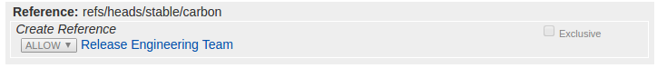

Branch Cutting¶
This page documents the current branch cutting tasks that are needed to be performed at RC0 and which team has the necessary permissions in order to perform the necessary task in Parentheses.
JJB (releng/builder)¶
Export
${NEXT_RELEASE}and${CURR_RELEASE}with new and current release names. (releng/builder committers)export CURR_RELEASE="Silicon" export NEXT_RELEASE="Phosphorus"
Run the script
cut-branch-jobs.pyto generate next release jobs. (releng/builder committers)python scripts/cut-branch-jobs.py $CURR_RELEASE $NEXT_RELEASE jjb/ pre-commit run --all-files
Note
pre-commitis necessary to adjust the formatting of the generated YAML.This script changes JJB yaml files to insert the next release configuration by updating streams and branches where relevant. For example if
masteris currently Silicon, the result of this script will update config blocks as follows:Update multi-streams:
stream: - Phosphorus: branch: master - Silicon: branch: stable/silicon
Insert project new blocks:
- project: name: aaa-phosphorus jobs: - '{project-name}-verify-{stream}-{maven}-{jdks}' stream: phosphorus branch: master - project: name: aaa-silicon jobs: - '{project-name}-verify-{stream}-{maven}-{jdks}' stream: silicon branch: stable/silicon
Review and submit the changes to releng/builder project. (releng/builder committers)
Autorelease¶
Block submit permissions for registered users and elevate RE’s committer rights on Gerrit. (Helpdesk)

Note
Enable Exclusive checkbox for the submit button to override any existing permissions.
Enable create reference permissions on Gerrit for RE’s to submit
.gitreviewpatches. (Helpdesk) Note
Enable Exclusive checkbox override any existing permissions.
Start the branch cut job or use the manual steps below for branch cutting autorelease. (Release Engineering Team)
Start the version bump job or use the manual steps below for version bump autorelease. (Release Engineering Team)
Merge all
.gitreviewpatches submitted though the job or manually. (Release Engineering Team)Remove create reference permissions set on Gerrit for RE’s. (Helpdesk)
Merge all version bump patches in the order of dependencies. (Release Engineering Team)
Re-enable submit permissions for registered users and disable elevated RE committer rights on Gerrit. (Helpdesk)
Notify release list on branch cutting work completion. (Release Engineering Team)
Branch cut job (Autorelease)¶
Branch cutting can be performed either through the job or manually.
Start the autorelease-branch-cut job (Release Engineering Team)
Manual steps to branch cut (Autorelease)¶
Setup
releng/autoreleaserepository. (Release Engineering Team)git review -s git submodule foreach 'git review -s' git checkout master git submodule foreach 'git checkout master' git pull --rebase git submodule foreach 'git pull --rebase'
Enable create reference permissions on Gerrit for RE’s to submit
.gitreviewpatches. (Helpdesk)Note
Enable Exclusive check-box override any existing permissions.
Create
stable/${CURR_RELEASE}branches based on HEAD master. (Release Engineering Team)git checkout -b stable/${CURR_RELEASE,,} origin/master git submodule foreach 'git checkout -b stable/${CURR_RELEASE,,} origin/master' git push gerrit stable/${CURR_RELEASE,,} git submodule foreach 'git push gerrit stable/${CURR_RELEASE,,}'
Contribute
.gitreviewupdates tostable/${CURR_RELEASE,,}. (Release Engineering Team)git submodule foreach sed -i -e "s#defaultbranch=master#defaultbranch=stable/${CURR_RELEASE,,}#" .gitreview git submodule foreach git commit -asm "Update .gitreview to stable/${CURR_RELEASE,,}" git submodule foreach 'git review -t ${CURR_RELEASE,,}-branch-cut' sed -i -e "s#defaultbranch=master#defaultbranch=stable/${CURR_RELEASE,,}#" .gitreview git add .gitreview git commit -s -v -m "Update .gitreview to stable/${CURR_RELEASE,,}" git review -t ${CURR_RELEASE,,}-branch-cut
Version bump job (Autorelease)¶
Version bump can performed either through the job or manually.
Start the autorelease-version-bump-${NEXT_RELEASE,,} job (Release Engineering Team)
Note
Enabled BRANCH_CUT and disable DRY_RUN to run the job for branch cut work-flow. The version bump job can be run only on the master branch.
Manual steps to version bump (Autorelease)¶
Version bump master by x.(y+1).z. (Release Engineering Team)
git checkout master git submodule foreach 'git checkout master' pip install lftools lftools version bump ${CURR_RELEASE}
Make sure the version bump changes does not modify anything under scripts or pom.xml. (Release Engineering Team)
git checkout pom.xml scripts/
Push version bump master changes to Gerrit. (Release Engineering Team)
git submodule foreach 'git commit -asm "Bump versions by x.(y+1).z for next dev cycle"' git submodule foreach 'git review -t ${CURR_RELEASE,,}-branch-cut'
Merge the patches in order according to the merge-order.log file found in autorelease jobs. (Release Engineering Team)
Note
The version bump patches can be merged more quickly by performing a local build with
mvn clean deploy -DskipTeststo prime Nexus with the new version updates.
Documentation post branch tasks¶
Git remove all files/directories from the
docs/release-notes/*directory. (Release Engineering Team)git checkout master git rm -rf docs/release-notes/<project file and/or folder> git commit -sm "Reset release notes for next dev cycle" git review